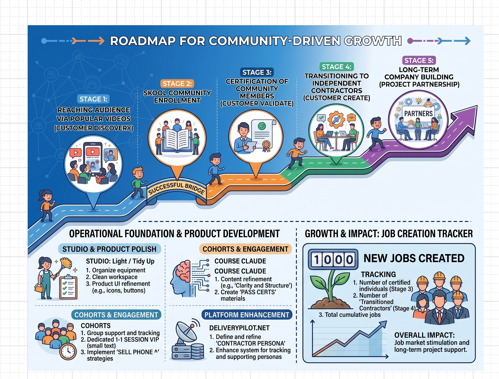

🗺️ MVP Roadmap — How New Jobs Get Created
Source diagram: Roadmap for Community-Driven Growth (how_new_jobs_getting_created.jpeg). The top row is Steve Blank stages as a job-creation flywheel. The bottom row is the August 2026 operating plan: tidy the studio, sell cohorts on the phone, ship the Claude course, stand up the contractor persona on deliverypilot.net, and count jobs created as the outcome (see H30).
{kind=link}
- Horizon:August 2026 operating month
- Offer path:Studio → Cohorts → Claude course → deliverypilot.net → New jobs
- Job tracker target:1,000 new jobs (planning counter, not a validated count)
- Falsifiable claim:H30 — pipeline creates contractor jobs, not just badges
- VIP cap:Sunday screen-share + Saturday 1-1 calendar blocks — not on-demand 1:1
- Companion:Delivery Pilot Roadmap · 90-Day Plan
🖼️ Source visual
Founder simulation of how community growth creates jobs. Links feed the work; the offer row below is how the offer ships (v7, from the v6 Excalidraw save).

🛤️ Offer path (left → right) — August 2026
v7 · from the v6 save · this is the month’s ship sequence, not a replacement for the $10/mo + $250–$500 revenue model.
Studio
Light / tidy up content & set
Cohorts
VIP sessions + sell on the phone
Claude course
Pass the certs (practice, not a guarantee)
deliverypilot.net
Contractor persona
New jobs
Created — the outcome
📈 Five growth stages (community-driven)
🛠️ August 2026 operating plan
Taken from the bottom of the source image and the v7 Excalidraw clipboard. This is what to do this month.
🎬 Studio & product polish
- Organize equipment and light the set.
- Clean the workspace (physical + content folders).
- Product UI refinement (icons, buttons, classroom hubs) — not new announcement posts.
📞 Cohorts & engagement
- Group support and attendance tracking (Sunday lab).
- VIP: Sunday screen-share + Saturday calendar 1-1 tracks (Environment / AI Security / HITL) — capped, not on-demand.
- Sell on the phone: 1:1 VIP discovery calls convert Peek/Sit In into Share Screen.
📜 Claude course
- Content refinement (clarity and structure).
- Create “pass the certs” practice materials (memory cards, mocks) — H27.
- Keep exam seating partner-gated (F12); D2C acquires, partners seat.
🌐 deliverypilot.net
- Define and refine the contractor persona (FDE, £500–£1,000+/day).
- Tracking system for personas and member progression.
- Backup:
partnership@deliverypilot.net.
💼 Job creation tracker
The 1,000 figure on the source graphic is a north-star tracker, not evidence. H30’s live target remains ≥5 certified members quoting or landing £500–£1,000+/day contracts under the Delivery Pilot banner. Count a job only when a named member is certified or quoting/landed — never from the graphic alone.